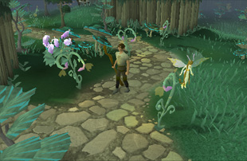
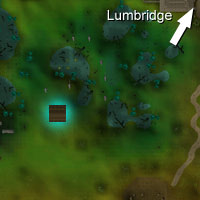
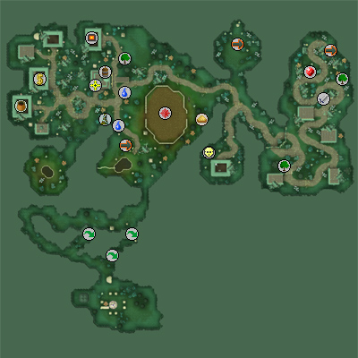
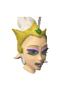
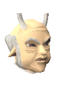
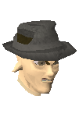
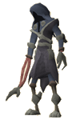

Zanaris (Members)
Warning | Introduction | Location | Points of Interest | Personalities
Quests | Weird Creatures | Miscellaneous
Quests | Weird Creatures | Miscellaneous
Warning
Initially, you will only be able to gain access to Zanaris if you are partway through the Lost City quest. Once you have first gained access to Zanaris, you will be able to use this same entrance method, or by using the Cosmic Altar portal in the Abyss.
Introduction

The city is ruled by the Fairy Queen, who does an excellent job running the city as well as making sure that plant life in the normal world grows properly. At times, though, the Fairy Queen is 'indisposed', at which point the Fairy Godfather steps in.
Location

Points of Interest

There is much to see in Zanaris aside from the shopping, such as the Evil Chicken Altar at the entrance to the city. More disturbed adventurers may even enjoy paying to homage to that ancient and foul fowl.
The Cosmic Altar is in the south of the city, and this is where visitors from the Abyss will begin their escapades through the Fairy Kingdom.
West of the wheat field in the centre of the city is a cow wheel, which is like a windmill but, as there are no winds underground, it is driven by a cow.
Personalities
|

Most of the time, the Queen rules Zanaris. She looks much like other fairies, but is slightly bigger and gets to wear a crown. She must do quite a good job, as plants on the surface of RuneScape rely on her to grow properly. Certainly, if anything untoward were to happen to her the crops would not be nearly as productive.
|

The Fairy Godfather is only really in charge of Zanaris when the Queen is away or ill. He seems to come from some other region of the Fairy Kingdom where they speak in a strange dialect. He wears a suit and you probably don't want to mess with him...or the Tooth Fairy will be paying you more visits than you'd like, capiche?
|
|
| The Fairy Queen can be found in the cave west of the market. | The Fairy Godfather can be found in the cave west of the market, when the Queen is absent. |

Slim Louie is one of the Fairy Godfather's two bodyguards, and a more devoted bodyguard couldn't be found (although Fat Rocco might disagree). He's called Slim, but, as you can see, fairies are either short-sighted or have a poor sense of humour.
|

Fat Rocco is the Fairy Godfather's other bodyguard and, like Slim Louie, his name has nothing to do with his appearance. He specialises in telling people not to talk to him and generally trying to look as menacing as a fairy can.
|
|
| Slim Louie can be found wherever the Fairy Godfather is. | Fat Rocco can be found wherever the Fairy Godfather is. |

Fairy Nuff is the local healer in Zanaris, and even though fairies almost never get ill or injured, she charges a great deal for her services. She has worked as a healer for several centuries now, and knows almost everything there is to know about illness and injury.
|

Fairy Very Wise is the Fairy Queen's advisor. As her name implies, she not without smarts, and has been key to keeping the Fairy Queen in good health and on the throne where she belongs. Although friendly, her job is somewhat stressful, so that may not always be apparent.
|
|
| Fairy Nuff can be found in the cave north of the bank. | Fairy Very Wise can be found wherever the Fairy Queen is. |
Quests
A Fairy Tale Part III - Battle at Orks Rift (Members)
Weird Creatures
|

Otherworldly beings are strange things - they seem to have no bodies, looking merely like air wrapped in black robes. They are drawn to Zanaris by the fairies' magic, and linger trying to absorb some of it. |

Zygomites are beasts of fungus and are particularly dangerous. You can't see them in their true form until you try to 'pick' them like mushrooms. Then they rear up out of the ground and attack, and only a prepared adventurer will be able to slay them. Your best bet, if you want to hunt zygomites, is to go to Chaeldar (in the Fairy Queen's cave) and purchase some fungicide from her. You need a Slayer level of 57 to kill zygomites.
|
|
| Otherworldly beings can be found in the cave south of the chef's cooking range. | Zygomites can be found north of the wheat field and east of the Cosmic Altar. |
Miscellaneous
- There is a chocolate bar next to the chef's range. She might complain if you take it, but she's quite generous.
- An egg can be found in front of the Evil Chicken altar, though it might be tainted just by sitting so close.
- There is a sand pit next to the wheat field.
- There are Agility shortcuts leading to the Cosmic Altar.
- Chaeldar is a Slayer Master and can be found in the Fairy Queen's cave.
- Adventurers who have completed A Fairy Tale Part III - Battle at Orks Rift will find they can enter Zanaris market for free (no more diamonds needed), as well as being able to sell various teeth to the Tooth Fairy.

More articles in
Cities and Towns
|
|